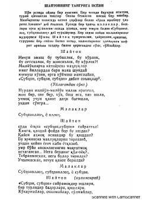

STShaytonning yaratilish va ilohiy tartibga nisbatan falsafiy isyonini aks ettiruvchi dramatik asar.
Ushbu asar Shaytonning Tangri va yaratilgan borliqqa nisbatan isyonkorona qarashlarini aks ettiruvchi dramatik asardir. Unda ilohiy hikmatlar, malaikalar va Shayton o'rtasidagi falsafiy bahslar orqali insonning yaratilishi va hayot mazmuni tahlil qilinadi.